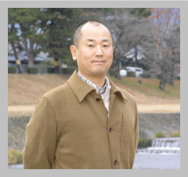

メンバー紹介
メンバー
鶴 剛（Tsuru Takeshi）

役職
教授
居室
334
電話番号
075-753-3868
田中 孝明（Tanaka Takaaki）

役職
助教
居室
327
電話番号
075-753-3869
内田 裕之（Uchida Hiroyuki）

役職
助教
居室
338
電話番号
075-753-3827
尾近 洸行（Okon Hiromichi）

学年
D1
居室
340
電話番号
075-753-4241
井戸垣 洋志（Idogaki Hiroshi）

学年
M2
居室
325
電話番号
075-753-3867
奥野 智行（Okuno Tomoyuki）

学年
M2
居室
327
電話番号
075-753-3869
原田 颯大（Harada Sodai）

学年
M2
居室
336
電話番号
075-753-3843
天野 雄輝 (Amano Yuki)
学年
M1
居室
336
電話番号
075-753-3843
佳山 一帆 (Kayama Kazuho)
学年
M1
居室
338
電話番号
075-753-3827
過去のメンバー
| 氏名 | 転出先 |
|---|---|
| 伊藤 真音 | 電子部品専業メーカー |
| 大村 峻一 | 宇宙開発関連企業 |
| 武田 彩希 | 宮崎大学 助教 |
| 信川 久実子 | 奈良女子大学 PD (学振) |
| 鷲野 遼作 | 衛星開発メーカー |
| 高田 明寛 | 半導体メーカー |
| 小池 貴之 | |
| 大西 隆雄 | 文部科学省 |
| 中島 真也 | ISAS プロジェクト研究員 |
| 菅原 隆介 | マーケティング企業 |
| 八隅 真人 | ジュエリー業界 |
| 劉 周強 | 総合電機メーカー |
| 澤田 真理 | 青山学院大学 助教 |
| 信川 正順 | 奈良教育大学 准教授 |
| 曽根 幹央 | 高校教師 |
| 松本 浩典 | 名古屋大学 准教授 |
| 内山 秀樹 | 静岡大学 講師 |
| 小澤 碧 | 教育出版業界 |
| 福岡 亮輔 | 衛星開発メーカー |
| 小山 勝二 | 京都大学 名誉教授 |
| 兵藤 義明 | コンピューターメーカー |
| 森 英之 | 名古屋大学 特任助教 |
| 乾 達也 | 光学機器メーカー |
| 山口 弘悦 | NASA/GSFC 研究員 |
| 瀧川 庸二朗 | 銀行員 |
| 片桐 秀明 | 茨城大学 准教授 |
| 高木 慎一郎 | 半導体・光学検出器メーカー |
| 小野 健一 | 教育出版業界 |
| 千田 篤史 | 文部科学省 |
| 馬場 彩 | 東京大学 准教授 |
| 辻本 匡弘 | ISAS 助教 |
| 横川 淳 | 教育業界 |
| 村上 弘志 | 東北学院大学 准教授 |
| 河野 誠 | メーカー |
| 西内 満美子 | 原研関西 研究員 |
| 濱口 健二 | NASA/GSFC |